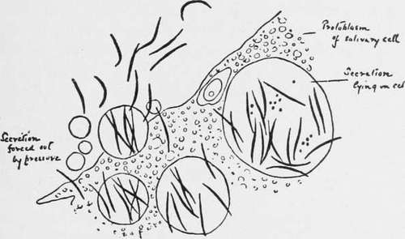

Dissection Of Mosquitos
Description
This section is from the book "Malaria, Influenza And Dengue", by Julius Mennaberg and O. Leichtenstern. Also available from Amazon: Malaria, influenza and dengue.
Dissection Of Mosquitos
(A) Isolation of the Salivary Glands.- It is convenient to remove the legs and wings. The anopheline is then placed in a drop of salt solution,-0.5 per cent, suffices,-lying on its right side with the head facing the dissector. A needle is placed on the thorax to steady the mosquito; with the other needle in the right hand, steady gentle traction is then made on the head, placing the needle just behind the head or slightly on the neck. By gentle pulling the head is removed, together with a little whitish mass of tissue in which the glands will be found. The dissection, which up to this stage is best done on a white surface, is now best done on a dull black surface. If the whitish mass of tissue has come out from the thorax, examine with a lower power of the microscope inch) for the glands. The glands are seen as glistening, finger like processes. The head is again steadied with the needle, and a transverse cut is made between the glands and the head with the other needle.
Examine again under the microscope to see if present. They may then be further teased out if necessary. As a rule, all six lobes are got with ease and certainty by this method. If, however, they have not been drawn out, they will be found still lying just near the attachment of the first pair of legs, and this position of the thorax is then isolated by dissection.
The glands are now transferred with a needle to a clean drop of salt solution, a cover glass is applied, slight pressure made, and the examination made for sporozoites with a 1/7 inch lens.
Bodies are sometimes met with in the glands of Culex spp. (and Anopheles) which resemble sporozoites, but do not, on staining, show a nucleus. Crystals are found also in the glands, which have some resemblance to sporozoites. Further care should be taken not to mistake in fresh preparations the wrinkled appearance of the esophageal diverticula for sporozoites. Pseudosporozoites, as Grassi calls them, have been found by him in A. maculipennis. They are shorter than true sporozoites-they are about 5 to 10 micro -and do not stain characteristically. He supposes them to be products of the glandular reaction. They probably correspond to the crystals found by Christophers and myself in African anophelines.
(B) Isolation Of The Midgut
The mosquito from which the glands have been removed can still be used for examining the viscera. The mosquito is placed on its back, and with the needle a nick is made on either side in the chitinous exoskeleton near the hind end. One needle is placed on the thorax to fix it, and traction is made on the separated hind segment. If the dissection is made on a dark surface, the viscera will now be seen-midgut, Malpighian tubes, and ovaries. The esophagus and its diverticula will also possibly be seen, or they may have been extracted in the previous dissection. The anterior end of the midgut is cut across and the Malpighian tubes and ovaries may also be removed. A cover glass is applied; slight pressure then causes the "stomach" to flatten out, and zygotes, if present, can readily be seen with a one sixth inch lens or lower power. To preserve fresh preparations the specimen is irrigated with 2 per cent, formalin solution or surrounded with glycerin; the latter gradually mixes with the fluid in which the dissection has been made, and the specimens are finally ringed with zinc white or other cement.
To Make Permanent Preparations of Sporozoites, Zygotes, etc.-If sporozoites have been found in the fresh preparation, the cover glass is "smeared" off carefully and the slide and cover glass are then dried as rapidly as possible. Fix the specimens in alcohol and stain with the Romanowsky stain. (The Romanowsky stain is made in the following way: Pure methylene blue, 1 part; carbonate of soda, 0.5 part; water, 100 parts. Keep in the sun or incubator until distinctly red. A second stock solution is made, consisting of eosin (yellowish, pure, soluble in water), 1 part; water, 1000 parts. For using, dilute each stock solution 20 times with water and mix equal parts of the dilute stains. Stain for ten minutes or longer; wash in water. Dry without using heat.)
Fig. 12.-Sporozoites in the Salivary Glands of an Anopheline (Fresh Preparation) (from Stephens and Christophers' "Practical Study of Malaria").
Staining Zygotes
When found, float the cover glass off carefully and allow the stomach to flatten out on the slide as completely as possible. Drain off the excess of solution. Dry and fix. Stain with hematein solution: Hematein, saturated solution in 70 per cent, alcohol, 10 c.c.; alum solution (alum, 50 grams, water, 1000 c.c.) 250 c.c. The solution improves with keeping. As ordinarily performed, satisfactory results cannot be obtained with the Romanowsky stain owing to the non penetration of the stain through the cyst wall, and further to the fact that it is generally advisable to dehydrate the specimen with alcohol. But the following modification of Christophers may be used. Stain for ten to fifteen minutes with the stock eosin solution; pour off the excess, and press with blotting paper. Then stain with the diluted methylene blue solution for fifteen to twenty minutes. Pour off excess and wash rapidly in 70 per cent, alcohol; transfer immediately to water. If the tissue is dark purple or blue, wash in dilute acetic acid (1 : 400 water). If the tissue is, however, light purple or light reddish, omit this. Allow the tissue to dry upon the slide.
To Cut Sections Of Mosquitos
Remove the limbs and wings and make an incision with a razor through the chitinous covering of the abdomen and thorax to allow thorough penetration of the fixing fluids. The mosquitos are, in the first place, best killed by dropping direct into absolute alcohol. Boiling the mosquitos in absolute alcohol is recommended by some authors. The mosquito is then embedded in the usual way in paraffin or celloidin.
To Cut Sections Of The Salivary Glands
Only the head and front half of the thorax need be taken. Cut sections horizontally.
Continue to:
Tags
mosquito, malaria, influenza, dengue, symptoms, outbreaks, diseases, hemoglobinuria, infections